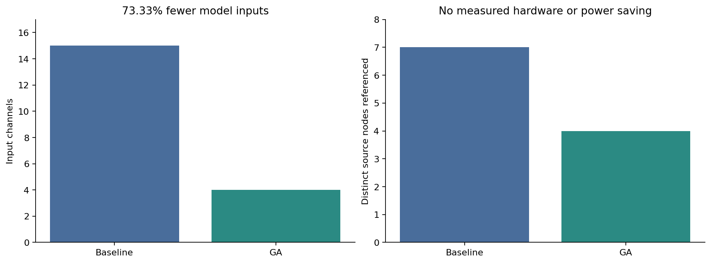
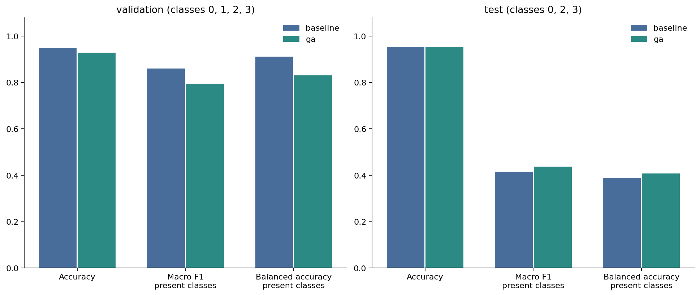
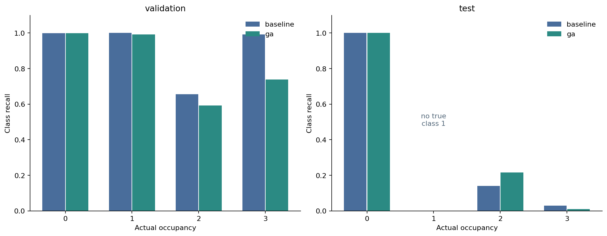
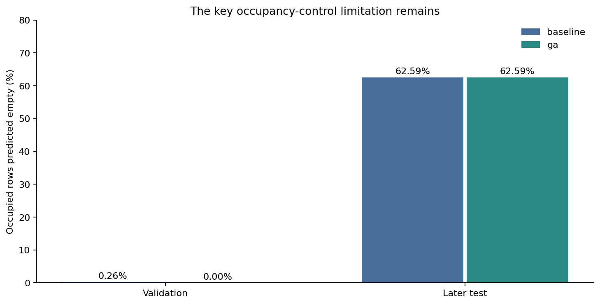
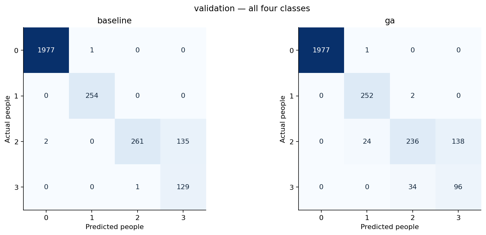
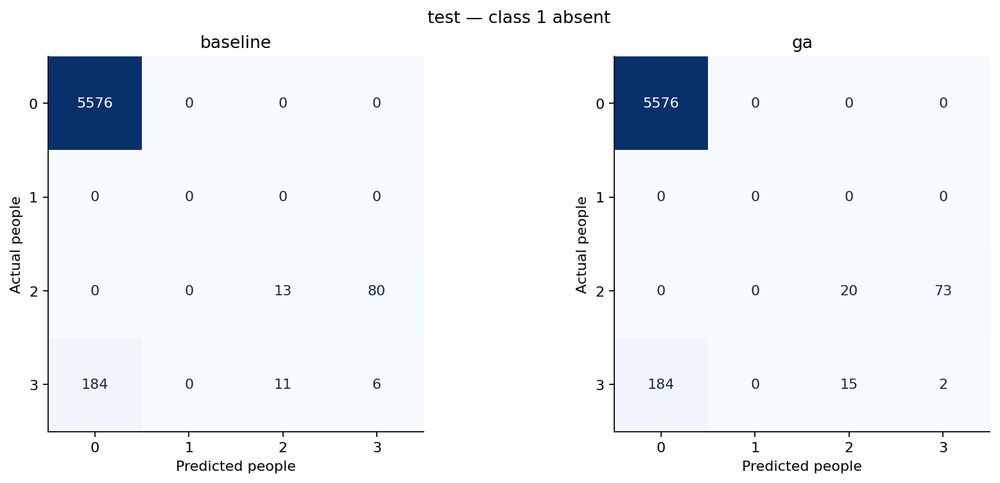

SOFT COMPUTING MINOR PROJECT / PHASE 4
Does GA improve the occupancy system?
Fewer inputs, lower validation performance
Inputs: 15 → 4 (73.33% reduction). Validation macro F1: 0.8608 → 0.7952. Baseline remains the default demonstration model; GA is an explicit compact alternative.
Both models predict empty on 184 of 294 occupied later-test observations (62.59%). Input reduction does not resolve this limitation. The later test lacks class 1. These previously seen data are not a new independent confirmation.
Methods and viva notes / Evaluation decision / Seven-phase roadmap
Formal comparison
| model | input_channels | source_nodes | input_reduction_percent | validation_accuracy_percent | validation_macro_f1 | later_test_accuracy_percent | later_test_balanced_accuracy_percent | later_test_false_empty_percent |
|---|---|---|---|---|---|---|---|---|
| baseline | 15 | 7 | 0.0000 | 94.9638 | 0.8608 | 95.3152 | 38.9879 | 62.585 |
| ga | 4 | 4 | 73.3333 | 92.7899 | 0.7952 | 95.3663 | 40.8335 | 62.585 |
Accuracy and reduction columns are percentages; macro F1 is a fraction. Node counts describe data dependencies, not physical removal or power savings.
Inputs and source nodes

Performance comparison

Recall of each occupancy class

Occupied rooms predicted empty

Validation confusion matrices

Later-test confusion matrices

Reproducible occupancy system
A fresh four-input, 300-tree fit reproduces Phase 3 predictions and probabilities. The unchanged baseline and fresh GA model are available through one interface with explicit input validation and model choice. No fuzzy control or energy layer has been implemented.